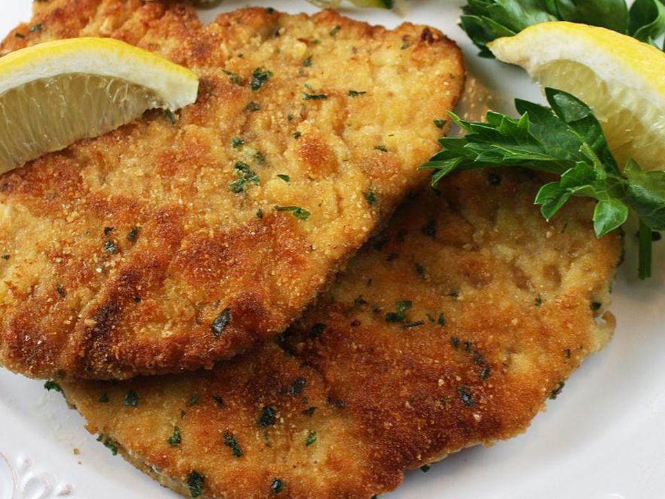

Chicken Milanese

Description
A timeless favorite! A chicken milanese is a delightful dish that is both simple and delicious. A personal favorite, it is
ready in under 30 minutes and pairs well with a variety of sides.
Enjoy!
Ingredients
- 2 Chicken breast halves
- 2 large eggs
- 3/4 cup flour
- 1 lemon
- Bread crumbs
- Salt
- Black pepper
- Any vegetable oil
Preparation
- Preheat the oven to 200 degrees F (95 degrees C)
- Beat eggs with salt and peper in a shallow dish. Spread flour in another dish and the bred crumbs in a third dish as illustrated in the picture below.

- "Butterfly" the chicken breast and follow the next steps
- Gently press chicken into flour to coat and shake off any excess.
- Dip into beaten eggs.
- Press into bread crumbs.
- Place breaded chicken on a plate as you repeat the process for the remaining pieces.
- Heat vegetable oil in a large skillet over medium heat and pan-fry the chicken for 2 to 4 minutes per side. If available, insert a thermometer into the center and it should read at least 165 degrees F (74 degrees C)
- Once cooked, transfer the chicken to a banking sheet and keep it warm in the preheated oven while you cook the remaining chicken.
- Serve with lemon wedges.
Return to homepage